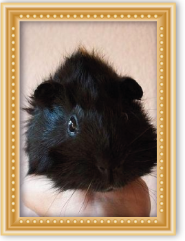
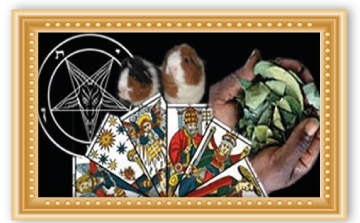

He is the patron of children angel for his role in the Zohar as the angel who led the people of Israel in the desert to the Promised Land. He guides children both on Earth and in Heaven. Help the Indigo and Crystal children to overcome obstacles in its evolution. Parents can ask Metatron to guide them to help their children in their education, spirituality and develop their psychic abilities.
Tireless fighter who always faces evil. It is served by the hosts of heavenly angels, those who collaborate in the maintenance of peace on Earth.
The Archangel Michael is, above all, the enemy of Satan. He is also the angel of death as it is said to offer the souls a chance to redeem himself before he died.
His third work is weighing souls in perfect balance on the day of Judgment. It is also the guardian of the universal Church.
The archangel Gabriel is almost always depicted in his role as messenger for being the bearer of the news of the Incarnation.
His image represents purity and announced through her white dress, a lily or multiple lilies in their hands and androgynous and delicate.
Flower delivery to Mary represents purity, virginity, innocence, love and harmony, virtues that embody both the Archangel Gabriel and the Virgin Mary.
He was in charge of announcing to Mary that she was expecting a child helps pregnant women.
Gather the people apart.
It is the heavenly messenger.
The archangel Raphael is almost always represented as a pilgrim. This image is a reference to the biblical story of Tobias, who also supports the idea of San Rafael Archangel as a healer.
The cane or staff that carries represents the will and spiritual support needed to travel the road of life.
It is who protects the sick, is always with those who are sick, while there is pain, disease. It also protects and cares marriages blessed happiness of the home.
The name Uriel means "Fire of God". It represents the almighty power of the spirit of life. His attribute is a flame that represents its mission to raise awareness of human beings with the fire of truth.
You can bring a book or scroll.
This attribute represents his divine role of observer. Keep track of feelings, thoughts and actions of human beings on their journey through life.
It is responsible for the land and the temples of God. It should help people facing tough stages, you take care of your integrity and relieves fatigue.
Jophiel is the archangel of wisdom, enlightenment and intellect. Some think it was he who expelled Adam and Eve from Paradise and, with a flaming sword, stood guarding the way to the Tree of Life. Unlike Michael, Gabriel and Rafael, is an archangel Jophiel has been very little said the man, an archangel whose nature is invested with mystery.
It is a bright, stable and capable of great mental clarity.
Archangel Chamuel is known as the angel of love. Its name means "He who sees God" or "He who seeks God." Their task is to encourage humans gratitude to God and unconditional and selfless love. As the Archangel of love, you can ask for their help and presence if you want to integrate into your life your virtues gifts and services.
Support lonely people suffering from a lack of love and respect. It protects against envy and eliminates the bitterness.
Archangel Zadkiel is "the righteousness of God." It is also known as Zadkiel, Hesediel, Zadakiel, Zedekiel, Zedekul, Sachiel and Tzadqiel. In Hebrew, his name is written צדקיאל.
As the "righteousness of God" is also the angel of goodness and mercy. He is the archangel of freedom, which reminds the human being has free will to act and make their own decisions. As God is infinitely just, Zadquiel represents the divine capacity for forgiveness.
 In everyday life amulets or talismans they were used by kings in ancient time.
In everyday life amulets or talismans they were used by kings in ancient time.
Always they are wearing a talisman, an amulet that allowed them to feel protected.
They are prepared from a consecrated stone, leather, parchment, metal, bone and other materials.
Which they provided protection and safety to the wearer, being easy to carry because they are small.
These amulets are conspirators, veiled and prayed for protection rituals, so you can get the power of the amulet protection and if lost can not be used by a different person to the original owner.
Depending on the type of protection you. Wish we can start preparing amulets and talismans home to those containing high-powered connections with higher entities.
The mixture of herbs and flowers specially collected and selected the highest areas of the mountains and virgin forests of Peru. Thus through incantations, offerings to the Apus and rituals is achieved in these purification power, body wash and aura. This bath is very powerful as it purifies the chakras and your electromagnetic field allowing the aura becomes pure and transparent to attract positive energies.
Making diseases can move away and projects you want can be met unhindered, in addition to ward off envy, evil and negative energies that may surround.
Dare to change your fate testing these powerful bathrooms they managed to attract the family and affective happiness and professional success, changing the way your destination attracting positive events.


It is an ancient method that is mostly used in the mountains of Peru. Can effectively display the ailments that are suffering, making these evils are removed from your body as the cuy achieved absorb completely by the body concerned to fully recover after to clean the cuy will be displayed to see what was the condition It affects you and your body will be evil and parasiempre section.
This procedure has been used by thousands of people since time immemorial, being always effective to cure unknown diseases.


INTERNATIONAL LOCAL CONSULTATIONS
EMAIL: santerosgiordanoyverenice@gmail.com
Direct SANTERO GIORDANO AND verenice
Mobile: (00511) - 935 821 296 / (00511) - 7330790